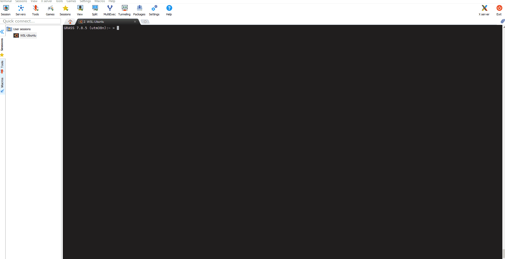
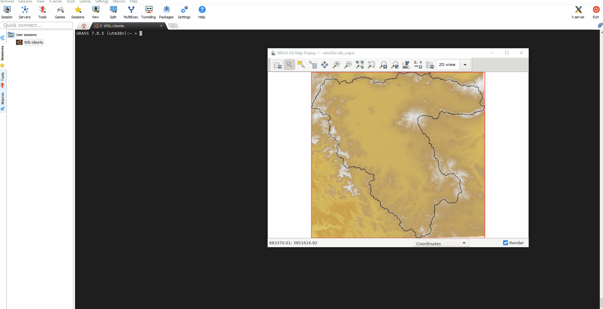
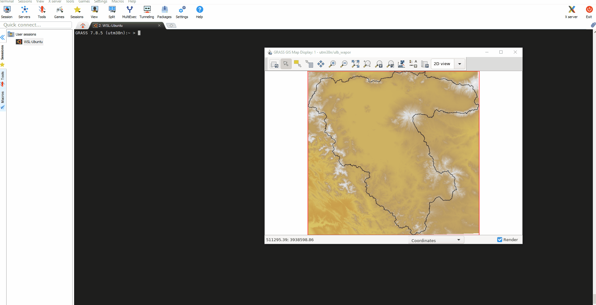

Spatio-temporal analysis with GRASS GIS
IHE Delft Institute for Water Education
The Netherlands
Outline
- Installation steps
- Introduction to GRASS GIS
- Start with GRASS GIS - first steps
- Explore features of GRASS GIS
- Exercise 1 - Seasonal aggregation and statistical analysis
- Exercise 2 - Spatio-temporal analysis of climatic data
Explore features in GRASS GIS
Import data
To explore the basic features of Grass GIS, let us import a raster and 3 different vector files into the location/mapset you created in the previous section.- r.import and v.import: import of raster and vector maps with reprojection, subsetting and resampling on the fly.
In the above code snippet we introduce three modules in Grass GIS - r.import, v.import and g.region.## Open the Grass GIS in 'utm38n/ulb_wapor' location/mapset grass78 /mnt/d/grassdata/utm38n/ulb_wapor ## IMPORT VECTOR DATA: Boundaries of Urmia Lake basin, Miandoab Irrig scheme and Urmia Lake ## Navigate (cd) to the 'Base_layers' folder provided to you cd /path/to/Base_layers # change the path to actual path in your computer # Import 'Urmia Lake Basin' boundary shapefile into a vector in Grass GIS v.import in=UrmiaLB.shp out=ulb # Import 'Miandoab Irrigation Scheme' boundary shapefile into a vector in Grass GIS v.import in=Miandoab.shp out=mis # Import 'Urmia Lake' boundary shapefile into a vector in Grass GIS v.import in=LakeUrmia.shp out=lake # set the computational region to Urmia Lake basin and set the computational resolution to 250 m g.region vector=ulb res=250 -a ## IMPORT RASTER DATA: SRTM V3 data for ULB ## cd to the directory containing elevation raster file cd /path/to/Base_layers # change the path to actual path in your computer # Import with reprojection on the fly r.import input=elevation.tif output=elevation resample=bilinear extent=region resolution=region
g.region restricts the spatial and temporal processing to the defined computational region. In the above code we set the computational region to urmia lake basin (g.region vect=ulb res=250 -a ) with a resolution of 250m. That means, all the remaining processing and analysis will be carried out within this region and output rasters will have a resolution of 250 m.
To see the details of the computational region: use the command g.region -p
All the modules in Grass GIS can be accessed via command line and via GUI
To open a module in gui, type in the module name in command line and press enter. OR you can access the module through the layer manager window like any other GIS software.As the main advantage of Grass GIS is the powerful command line options, we stick to command line operations in this course.
open module in gui
Manage vector and raster data
- g.list: Lists available GRASS data base files of the user-specified data type (i.e., raster, vector, 3D raster, region, label) optionally using the search pattern.
g.list type=raster pattern="elev*"|cat g.list type=vector|cat - g.remove, g.rename and g.copy: These modules remove maps from the GRASSDBASE, rename maps and copy maps either in the same mapset or from other mapset. IMPORTANT: Always perform these tasks from within GRASS. Note that g.remove offers the same extra-useful pattern option than g.list.
- g.region: Manages the boundary definitions and resolution for the computational region. It is especially relevant when generating new raster maps.
## Subset a raster map # 1. Check region settings g.region -p # 2. Change region to Miandoab g.region vect=mis res=250 -a # print the region # 3. Subset map r.mapcalc "elevation_mis = elevation" r.colors elevation_mis color=elevation - r.info and v.info: These modules are very useful to get basic info about maps as well as their history.
# info for raster map r.info elevation # info for vector map v.info ulb # history of vector map v.info ulb -h - r.mask: This module is very useful to mask to a particular vector or even raster values, for example a particular land cover type. This can be also used to clip an existing raster to another boundary.
# set the region first g.region vect=ulb res=250 -a # Create a mask of urmia lake basin r.mask vect=ulb # Clip the elevation to Urmia lake basin boundary r.mapcalc "elevation_ulb = elevation" # Remove the Mask r.mask -r - r.univar: This module is very useful to get univariate statistics of a particular raster map.
# Univariate statistics of elevation in ulb r.univar elevation # extended univar statistics of elevation in ulb r.univar -e elevation # Compute 5 and 95 percentile fromthe distribution of elevation in ULB r.univar -e elevation percentile=5,95 - Now you want to create a script to run certain spatial analysis in a mapset. In bash, the scripts are with the extensions ".sh". Follow below code and create your first script in bash
Now you have "myscript.sh" ready. In the command console, type#!/bin/bash # copy this entire code (including the comments) and paste into an empty text file # Save this file as "myscript.sh" # This script print the computational region, list the raster files and Compute # univariate statistics of elevation g.region -p g.list type=raster|cat r.univar elevationsh myscript.sh to run the script.Managing multiple mapsets within a location
- g.mapset and g.mapsets: These modules allow to change mapset and add/remove mapsets from the accessible mapsets list (i.e., we add a mapset to the path if we want to read/see maps in that mapset while we are working in another).
# print current mapset g.mapset -p # change to a different mapset g.mapset mapset=PERMANENT # print mapsets in the search path g.mapsets -p # list available mapsets in the location g.mapsets -l # add mapset to the search path g.mapsets mapset=PERMANENT operation=addLast changed: 2021-07-07
GRASS GIS manual main index | Topics index | Keywords Index | Full index | Raster index | Vector index | Temporal index |

Licensed under a Creative Commons Attribution-ShareAlike 4.0 International License - Thanks to Vaclav Petras for the style.
{kind=link}
Computational region

changing computational region
{kind=link}
changing computational region
Raster and vector information
Mask and clipping

Applying mask
{kind=link}
Applying mask